In China Employee Termination in 2026: A Role-Relay Governance Model for Foreign Employers New to Local Labor Rules
Key takeaways
- China termination decisions should begin with legal route classification and evidence review, not with a manager instruction to “process exit this month.”
- For foreign employers, risk often emerges at handoff points between legal, HR, payroll, business managers, and external vendors.
- A role-relay model improves consistency by defining who decides legal basis, who communicates, who codes payroll, and who owns the evidence archive.
- Arbitration-first dispute dynamics in China make case-file integrity a practical business control, not a purely legal afterthought.
- Operational execution remains important, but it should follow legal clarity rather than drive it.
Legal and regulatory context first: the foundation non-local teams need
Foreign leadership teams often import assumptions from at-will jurisdictions, where termination can look primarily like a management and HR process. In China, that framing is incomplete and can be expensive. The practical baseline is legal-route discipline. Before discussing payout labels, notice language, or offboarding dates, employers should establish which lawful route applies and whether the known facts and records can support that route consistently.
This legal-first order is grounded in the structure of applicable sources. The PRC Labor Contract Law sets core rules for termination pathways and consequence logic. The State Council’s implementation regulation adds operational interpretation relevant to employer practice. The Supreme People’s Court labor dispute interpretation provides a dispute-facing lens that matters when cases are challenged. The Social Insurance Law anchors statutory obligations tied to contribution and offboarding handling. China Briefing then serves as a foreign-reader translation layer that helps multinational teams connect legal architecture to real execution choices.
For international operators, the key point is simple: policy confidence should not exceed source authority. A global template or manager preference cannot overrule local legal classification. If route certainty is weak, execution speed should slow down rather than accelerate.
Why governance handoffs are the real fault line
Most termination playbooks fail not because teams forget the existence of law, but because responsibilities are blurred at decision and communication handoffs. A manager states that a termination should proceed. HR tries to translate that instruction into process language. Legal is consulted late. Payroll receives mixed guidance on coding and payment labels. A vendor or EOR executes parts of the flow without one owner validating end-to-end consistency.
In this pattern, each individual team may perform competently, yet the case still becomes high risk because the narrative is inconsistent across artifacts. The legal route in internal notes may differ from employee-facing communication. Payroll labels may not match approved rationale. Supporting records may exist but be scattered. In arbitration settings, fragmented consistency can weaken employer defensibility even when business rationale seemed reasonable at the start.
A role-relay model addresses this by converting implicit assumptions into explicit control gates. It does not require heavy bureaucracy. It requires role clarity, defined approval sequence, and a common evidence standard.
The role-relay architecture: who does what, and in what order
Gate 1: Legal route determination (Legal + HR)
Legal and HR should co-own the first gate: classify the proposed route and test whether facts support it. This is where teams distinguish between mutual agreement, unilateral pathways, expiry-related handling, or broader restructuring routes. If the route is unclear, the case should be flagged as unresolved rather than forced downstream.
Gate 2: Fact and evidence integrity (HR + Manager)
HR and the line manager should consolidate factual chronology and source records. Manager-level confidence is useful, but evidence is what matters in disputes. Missing records, contradictory communication history, or unsupported assertions should be treated as decision blockers, not “documentation to fix later.”
Gate 3: Communication alignment (HR + Legal)
Before any employee-facing release, legal framing and communication wording should be aligned. This includes notices, meeting scripts, and explanation language likely to be retained as evidence. Changes at this stage should be version-controlled so teams can show what was approved and when.
Gate 4: Payroll and statutory treatment alignment (Payroll + HR + Legal)
Payroll should map components only after route confirmation. Payment categories, explanatory labels, and statutory closure handling need to be coherent with approved case rationale. If payroll treatment and legal narrative diverge, teams should escalate before release.
Gate 5: Archive and dispute-readiness closure (HR + Vendor/EOR)
Case closure should include a complete and indexable archive, with clear ownership for storage and retrieval. If a vendor or EOR participates, responsibility boundaries should be documented in writing so retrieval does not fail when a dispute emerges later.
Governance matrix for foreign employers
| Relay stage | Primary owner | Supporting owner(s) | Core control question | Output artifact |
|---|---|---|---|---|
| Route classification | Legal | HR | Is the legal pathway clearly identified and supportable? | Approved route memo |
| Evidence integrity | HR | Manager, Legal | Do facts and records support the chosen route? | Evidence map + gap log |
| Communication alignment | HR | Legal, Manager | Are internal and external messages consistent? | Approved communication pack |
| Payroll/statutory alignment | Payroll | HR, Legal | Do payment coding and statutory handling match route logic? | Payment rationale sheet |
| Archive closure | HR | Vendor/EOR, Payroll | Is the full case reconstructable for arbitration readiness? | Evidence index + retention log |
This structure is intentionally practical for regional teams. It creates a repeatable framework that can be adapted city by city while preserving a consistent legal-first baseline.
Scenario 1: manager urgency collides with legal ambiguity
A foreign subsidiary manager asks HR to terminate an employee quickly due to sustained performance concerns. HR review identifies uneven documentation and shifting performance criteria across periods. The manager argues the business case is obvious and requests fast processing before month-end.
Under a role-relay model, the case cannot proceed on urgency alone. Gate 1 and Gate 2 outcomes are not stable: route classification confidence is limited and evidence integrity is incomplete. The governance response is to pause release, document gap items, and either strengthen support or consider a more controlled route depending on feasible options. Payroll is instructed not to pre-code final components until route certainty improves.
The business value of this pause is often misunderstood. It is not delay for delay’s sake. It protects the company from turning a manageable people issue into a formal dispute with higher cost, reputational strain, and management distraction.
Scenario 2: regional restructuring with mixed local readiness
A multinational launches a cost initiative across multiple functions, including China. Headquarters requests a standard output timeline and budget envelope. Local teams report uneven document readiness and uncertainty about how specific cases fit route criteria.
A conventional response might push all cases through one operational calendar. A role-relay approach is different. It segments cases by route confidence, requires gate completion before communication release, and escalates unresolved local-practice questions before irreversible steps. High-risk cases receive enhanced legal review and tighter archive controls. Lower-risk, well-supported cases can progress with standard governance checks.
This staged governance model often improves both compliance and execution quality. It avoids a false choice between speed and control by matching process intensity to risk profile.
SOP by role (operations layer, secondary to legal context)
Legal SOP
- Validate route fit using available case facts.
- Identify mandatory evidence elements and unresolved ambiguity.
- Define red-line inconsistencies that require escalation.
- Approve or reject route advancement at Gate 1 and Gate 3.
HR SOP
- Build case chronology and coordinate cross-function review.
- Maintain communication version control and approval logs.
- Track gate completion and route unresolved items.
- Own archive completeness at closure.
Manager SOP
- Provide factual records and timeline context.
- Avoid premature statements that pre-commit legal outcomes.
- Follow approved communication templates and escalation rules.
Payroll SOP
- Wait for route-confirmation signal before component mapping.
- Align payment labels and coding with approved rationale.
- Log exceptional treatment decisions and approval references.
- Confirm statutory closure handling consistency.
Vendor/EOR SOP
- Execute assigned tasks within documented boundaries.
- Preserve traceability of communications and documents handled.
- Confirm archive handoff responsibilities in writing.
This SOP layer should remain subordinate to route clarity. In other words, the workflow is not “process first, legal check later.” It is legal-first, then process.
Document and evidence checklist for arbitration readiness
A case should not be considered complete unless the file can be reconstructed by a third party who was not involved in the original discussion. The following baseline helps test that standard.
- Employment contract set and relevant amendments.
- Route-classification memo with approval record.
- Fact chronology with dated evidence references.
- Manager records relevant to asserted facts.
- HR communications draft history and final versions.
- Legal review comments and escalation notes.
- Payroll rationale and component mapping output.
- Statutory closure notes and confirmation items.
- Vendor/EOR work logs where applicable.
- Archive index with storage locations and owner.
For global teams used to lighter files, this may feel heavy. In practice, it is usually lighter than dispute reconstruction under time pressure.
Exception routing playbook
Missing key record before release
If a required document is unavailable, freeze release and log the missing item as a blocker. Decide whether to recover evidence, adjust route, or choose a more controlled closure pathway.
Contradictory internal messaging
If manager or HR communications conflict with approved legal framing, stop outbound communication and issue corrected language under legal review.
Payroll-label mismatch
If payroll output labels do not match route rationale, hold payment release until coding is corrected and documented.
Local-practice uncertainty
If city-level interpretation remains unclear, record residual uncertainty and seek qualified local confirmation before final action.
Vendor boundary confusion
If vendor/EOR ownership is unclear at a critical handoff, suspend transition and issue a written responsibility map before proceeding.
These exception controls are not designed to block business. They prevent small inconsistencies from becoming case-level weaknesses.
System implementation notes: minimal but high-value control design
Foreign employers do not need to rebuild every HR and payroll system to improve China termination control. High-value improvements can be incremental. First, make termination route a controlled field with approval state, not a free-text value. Second, tie dependent payroll and communication templates to that route state so contradictions are harder to introduce. Third, enforce pre-release checks that compare route, communication, and payment labels before final dispatch.
Auditability should be practical. Capture who approved each gate, when, and against which version of documentation. A simple version log and repository index is often enough if discipline is consistent. Teams should also define retention ownership clearly, especially when external vendors are involved, so evidence retrieval does not fail later.
In multi-country operating environments, this architecture has another benefit: it creates comparable governance metrics across markets while respecting local legal differences.
Common mistakes and how to prevent them
Mistake 1: route selection by managerial preference
Prevention: require legal/HR Gate 1 approval before downstream tasks begin.
Mistake 2: delayed legal review after communications are drafted
Prevention: make Gate 3 a mandatory pre-release control.
Mistake 3: payroll treated as a mechanical back-office function
Prevention: include payroll as a governance actor with escalation authority for label mismatches.
Mistake 4: fragmented archive ownership
Prevention: assign one accountable archive owner and require closure checklist sign-off.
Mistake 5: assuming vendor participation equals risk transfer
Prevention: document role boundaries and maintain principal oversight for route and evidence integrity.
What to do now: practical implementation steps for foreign employers
- Publish a one-page role-relay map that defines five gates and owners.
- Add route-classification and evidence-summary fields to case intake.
- Implement a stop/go gate before employee-facing communication.
- Require payroll sign-off on rationale alignment before final release.
- Build a minimal evidence index template and apply it to all new cases.
- Define escalation triggers for local-practice ambiguity and manager urgency conflicts.
- Audit recent closed cases for handoff inconsistencies and update controls.
- Train regional managers on why legal-first sequencing protects both speed and outcomes.
These steps are intentionally modest so teams can adopt them quickly without waiting for a full policy rewrite.
What to watch next
Foreign employers should monitor three developments. First, practical interpretation trends in dispute handling may evolve by city and case type, which can shift evidence expectations. Second, restructuring cycles can increase pressure for accelerated case throughput, making governance discipline harder to maintain. Third, internal multinational policy harmonization efforts may unintentionally flatten local differences; teams should preserve local legal triggers inside global frameworks.
A stable long-term posture is to keep one national governance architecture, update interpretation notes periodically, and test controls using real case retrospectives.
Source-fit reassessment for this run
This run uses the same high-confidence legal source hierarchy as the previous cycle but changes article structure to a role-relay governance model. That is intentional: source authority remains stable while framing rotates to avoid template repetition and to improve audience comprehension from an organizational-control angle. Matrix-led content from the prior run was replaced by ownership-and-handoff architecture in this version. The source set remains sufficient because each source maps directly to one governance need: legal basis, implementation detail, dispute perspective, statutory closure, and foreign-employer practice translation.
FAQ
1) Why is role clarity so important in China termination work?
Because dispute outcomes can hinge on consistency across legal rationale, communication records, and payroll treatment, all of which are produced by different teams.
2) Can a strong HR process compensate for weak legal route selection?
Usually no. Process quality helps, but it cannot fully cure a weak or misclassified legal pathway.
3) Should payroll wait for legal confirmation in every case?
Payroll should at least wait for route-confirmation at key decision points before final component coding and employee-facing breakdowns.
4) Does this model work for EOR-supported operations?
Yes, if accountability boundaries are explicit and one internal owner remains responsible for end-to-end consistency.
5) Is this approach too slow for business needs?
When implemented well, it often reduces rework and dispute escalation, which improves total cycle efficiency.
6) Can this article substitute for legal advice on a live case?
No. It is a governance framework for informed decision-making and should be paired with qualified local professional advice.
Disclaimer
This article is for informational purposes only and does not constitute legal, tax, accounting, or compliance advice. China employment outcomes depend on case facts and local implementation practice. Employers should obtain qualified local professional advice before making specific termination decisions.
Sources
- National People’s Congress. Labor Contract Law of the People’s Republic of China (official English text; adopted 2007-06-29, amended 2012-12-28). http://www.npc.gov.cn/zgrdw/englishnpc/Law/2007-12/13/content_1384064.htm (accessed 2026-02-27).
- State Council. Regulations for the Implementation of the Labor Contract Law of the PRC (State Council Decree No. 535; official publication). https://www.gov.cn/gongbao/content/2008/content_1124615.htm (accessed 2026-02-27).
- Supreme People’s Court. Interpretation on Issues Concerning the Application of Law in the Trial of Labor Dispute Cases (I) (2020 amendment). https://www.court.gov.cn/fabu/xiangqing/243981.html (accessed 2026-02-27).
- National People’s Congress. Social Insurance Law of the People’s Republic of China (official English text; adopted 2010-10-28). http://www.npc.gov.cn/zgrdw/englishnpc/Law/2009-02/20/content_1471106.htm (accessed 2026-02-27).
- Dezan Shira & Associates (China Briefing). Employee Termination in China: A Guide for Employers (updated 2025). https://www.china-briefing.com/news/employee-termination-in-china/ (accessed 2026-02-27).
China-Payroll.com supports foreign employers with compliance-first EOR and payroll operations in China.
Need local employment support in China?
If you need a compliance-first partner for hiring, payroll, and risk controls in China, China-Payroll.com can help evaluate the right setup.
Image Prompt Pack
Create a 16:9 hero image for article title: 'In China Employee Termination in 2026: A Role-Relay Governance Model for Foreign Employers New to Local Labor Rules'. Scene: global operations team evaluating workforce model options for China market entry. Include …